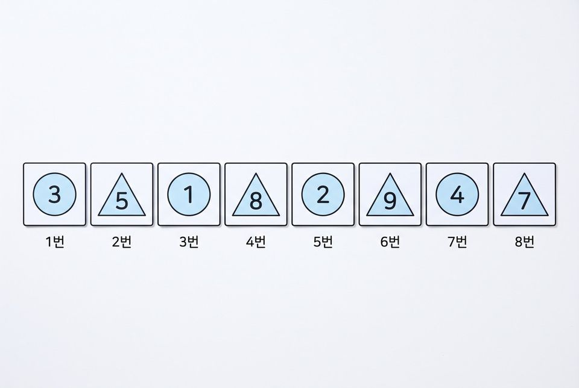
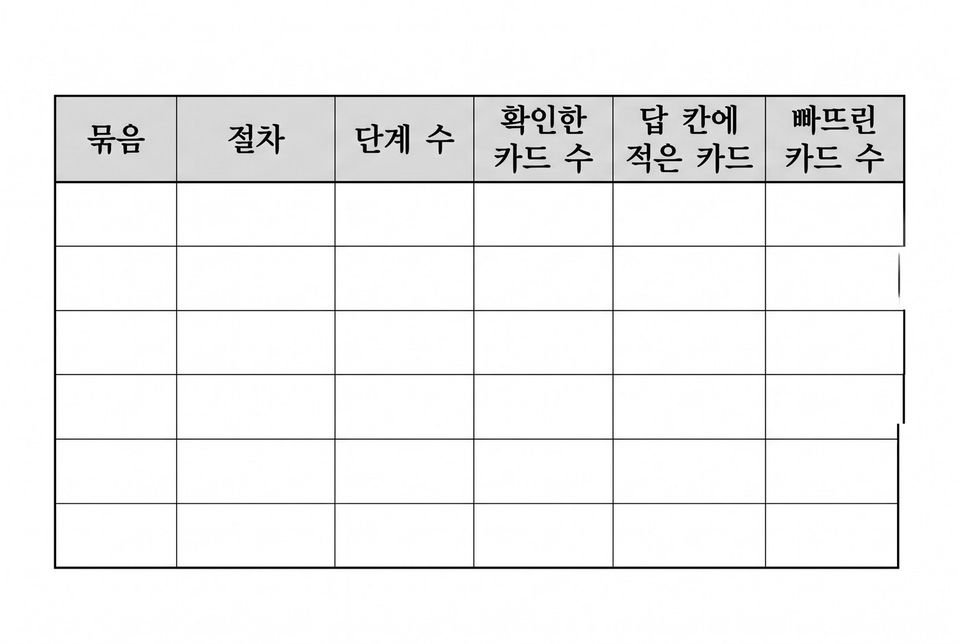
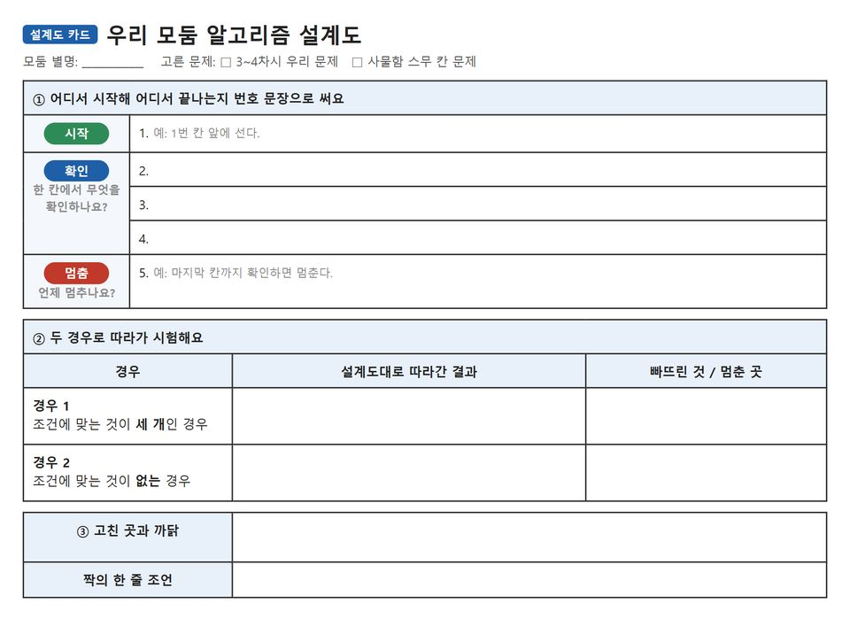

5학년 11~12차시 알고리즘 [5실소프트웨어02-01]
카드 찾기 대결로 두 절차를 비교하고 우리 문제의 알고리즘 설계도 만들기
학습 문제 — 두 절차를 같은 카드 묶음으로 실행해 수를 세어 비교하고, 우리 문제의 절차를 만들어 봅시다.
개요
| 성취기준 | [5실소프트웨어02-01] 놀이를 통해 알고리즘을 체험하고, 문제를 해결하는 절차를 다양한 방법으로 표현한다. 연계 성취기준: [6실05-01], [06자율-2] |
|---|---|
| 핵심 역량 | 지식정보처리 역량, 창의적 사고 역량 |
| 핵심 기능 | ① 일상생활의 문제를 해결하기 위한 알고리즘 구상하기 ② 같은 문제를 푸는 두 절차를 같은 입력으로 실행하기 ③ 단계 수와 확인한 수와 빠뜨린 수 세어 적기 ④ 짧은 절차가 빠뜨리는 함정 묶음 만들어 보이기 ⑤ 우리 문제의 절차를 번호 문장 설계도로 나타내기 |
| 가치 태도 | 생활 속에서 컴퓨터를 활용해 해결 가능한 문제를 탐색해 보려는 자세 해결 방법의 좋고 나쁨을 느낌이 아니라 센 수로 따져 보려는 자세 |
교수학습 활동
11차시 도입 동기 유발 · 학습문제 제시11차시 전개 활동1. 두 절차 읽고 셀 것 정하기 · 활동2. 가팀·나팀 카드 찾기 대결12차시 전개 활동3. 함정 묶음 만들어 도전하기 · 활동4. 우리 문제 알고리즘 설계도 만들기12차시 정리 배운 내용 정리 · 다음 차시 예고
11차시도입7분
동기 유발
- 정리함에서 색연필만 골라 담는 나만의 순서 말하기
- 옆 사람과 순서를 견주며 같은 일도 순서가 다를 수 있음을 확인하기
- 해결단 6호 미션: 3~4차시 우리 문제 포스터를 알고리즘 설계도로 키우기

학습문제 제시
- 두 절차를 같은 카드 묶음으로 실행해 수를 세어 비교하고, 우리 문제의 절차를 만들어 봅시다.
준비물필기구
자료비교 기록 활동지, 3~4차시 모둠 미션 포스터, [도입] 상황 그림
유의점말로 설명하기 어려워하면 한 줄에 한 가지 일씩 번호를 붙여 쓰게 한다.
유의점활동지 배부와 자리 정돈 시간을 도입 시간에 포함한다.
11차시전개33분
활동1. 두 절차 읽고 셀 것 정하기 (12분)
- 모양이 △이고 숫자가 5보다 큰 카드를 찾는다는 조건 확인하기
- 숫자 5 카드는 답에 넣지 않는 까닭 말하기
- 절차 가와 절차 나를 읽고 단계 수를 각각 세어 적기
- 단계 수·확인한 카드 수·빠뜨린 카드 수를 셀 것으로 정하기
- 어느 절차가 이길지 예상 스티커를 붙이고 까닭 적기

활동2. 가팀·나팀 카드 찾기 대결 (21분)
- 모둠을 가팀과 나팀으로 나누고 같은 카드 묶음 받기
- 묶음 ㄱ을 팀 절차대로 실행하고 세 가지 수를 각자 적기
- 묶음 ㄴ을 실행하고 빠뜨린 카드 이름까지 적기
- 묶음 ㄷ을 실행하고 확인한 카드 수 적기
- 팀 절차를 바꿔 세 묶음을 한 번 더 실행하기
- 짝과 숫자가 다른 칸을 찾아 어느 카드에서 갈렸는지 짚기
준비물필기구, 모양·숫자 카드 묶음 ㄱ·ㄴ·ㄷ(모둠당 한 벌), 예상 스티커
자료비교 기록 활동지, [활동1] 카드 묶음 그림
유의점‘효율적이다’로 넘어가지 말고 무엇을 셀지 먼저 정한다.
유의점승부는 빠르기가 아니라 세 가지 수로 가린다.
유의점절차를 도중에 고치지 말고 적힌 대로 끝까지 따라가게 한다.
유의점종이 카드가 없으면 활동지 카드표를 짚으며 실행하게 한다.
12차시전개33분
활동3. 함정 묶음 만들어 도전하기 (17분)
- 기록표를 펴고 절차별로 빠뜨린 카드 수 읽기
- 모두 찾아야 하는 일에 쓸 절차를 숫자를 근거로 고르기
- 절차 나를 써도 되는 일은 어떤 일인지 이야기 나누기
- 카드 여덟 장으로 절차 나가 빠뜨리는 함정 묶음 만들기
- 짝과 함정 묶음을 바꿔 두 절차로 실행하고 빠뜨린 카드 수 적기

활동4. 우리 문제 알고리즘 설계도 만들기 (16분)
- 3~4차시 우리 문제와 사물함 스무 칸 문제 가운데 하나 고르기
- 시작과 끝이 드러나게 번호 문장으로 쓰기
- 한 칸에서 무엇을 확인하고 언제 멈추는지 이어 쓰기
- 조건에 맞는 것이 세 개인 경우와 없는 경우로 따라가기
- 고친 곳과 까닭을 적고 모둠 설계도 카드에 옮겨 붙이기

준비물설계도 카드(8절)
자료절차 설계 활동지, [활동3] 기록표 틀 그림
유의점한쪽을 틀린 절차라 부르지 않고, 어떤 입력에서 무엇을 빠뜨리는지로 말하게 한다.
유의점숫자 근거 없이 ‘효율적이라서’라고만 쓴 답은 무엇을 몇 번 세었는지 되묻는다.
유의점설계가 어려운 학생에게는 ‘처음·확인·멈춤’ 뼈대를 준다.
유의점빨리 끝낸 학생은 순서도 기호로도 나타내게 한다.
유의점설계도는 21차시 이후 제작에 다시 쓰므로 모둠별로 보관한다.
12차시정리7분
배운 내용 정리 (5분)
- 짝과 설계도를 바꿔 두 경우로 따라가 보고 한 줄 조언 남기기
- 단계 수가 적은 절차가 더 낫지 않은 때는 언제인지 말하기
- 고른 절차와 까닭을 숫자를 넣어 한 문장으로 쓰기
- 만든 절차를 실행해 확인해야 하는 까닭 쓰기
다음 차시 예고 (2분)
- 마이크로비트 LED에 그림을 차례로 나타내는 활동 안내 듣기
- 활동지 두 장을 함께 정리해 내기
자료절차 설계 활동지
유의점쓰기를 어려워하는 학생은 말로 확인하고 지원한 사실을 적어 둔다.
유의점셈 실수로 한 번 어긋난 것은 개념 오류로 보지 않는다.
평가 계획
컴퓨팅 사고력 · 해결 절차의 비교와 설계
두 절차를 같은 입력으로 실행해 센 수로 비교하고, 고른 절차와 자기 절차를 설명할 수 있는가?
| 수준 | 평가 기준 |
|---|---|
| 매우 잘함 | 세 묶음을 두 절차로 모두 실행해 기록표의 수를 실행 결과대로 적고, 짧은 절차가 빠뜨리는 함정 묶음을 직접 만들어 시험한다. 고른 절차의 까닭을 기록표의 숫자를 들어 설명하고, 우리 문제의 설계도를 두 경우로 확인해 고친 곳과 까닭을 쓴다. |
| 잘함 | 기록표를 대부분 채우고 짧은 절차가 빠뜨린 카드를 찾아 적는다. 고른 까닭에 숫자 근거를 한 개 이상 들고, 설계도를 한 경우로 확인한다. |
| 보통 | 두 절차를 실행해 기록하지만 일부 칸의 수가 맞지 않거나, 빠뜨린 카드를 찾은 뒤에도 고른 까닭을 단계가 적어서라고만 쓴다. |
| 노력요함 | 교사가 카드를 함께 짚어 주고 절차를 한 줄씩 읽어 준 뒤에도 실행 결과를 세어 기록하거나 빠뜨린 카드를 찾는 데 어려움이 있다. |
| 미관찰 | 결석이나 미제출로 확인하지 못한 경우. 낮은 성취로 적지 않고 따로 기록한 뒤 보충 확인 시점을 정한다. |
평가 방법 활동지·설계도 분석 · 구술 확인 · 관찰
연동 도구·링크
과정안에 나오는 도구가 저절로 걸립니다. 수업 전에 학교망에서 열리는지, 블록·메뉴 이름이 바뀌지 않았는지 확인하세요.
내 수업 링크
학급 패들렛, 엔트리 작품, 활동지 주소처럼 이 차시에 쓸 링크를 걸어 둡니다. 이 브라우저에만 저장되고 밖으로 보내지 않습니다. 학생 이름이 든 주소는 넣지 마세요.